I/O systems bridge the orders-of-magnitude speed disparity between the CPU/memory hierarchy and peripheral storage devices. The operating system structures I/O management around two core objectives: generality (presenting a uniform device abstraction across heterogeneous hardware) and efficiency (maximizing throughput and overlapping CPU computation with device latency).
1. I/O System Architecture
Peripherals vary across data transfer modes (character vs. block streams), access semantics (sequential vs. random), synchronization behaviors (synchronous vs. asynchronous), and sharing constraints (dedicated vs. shared).
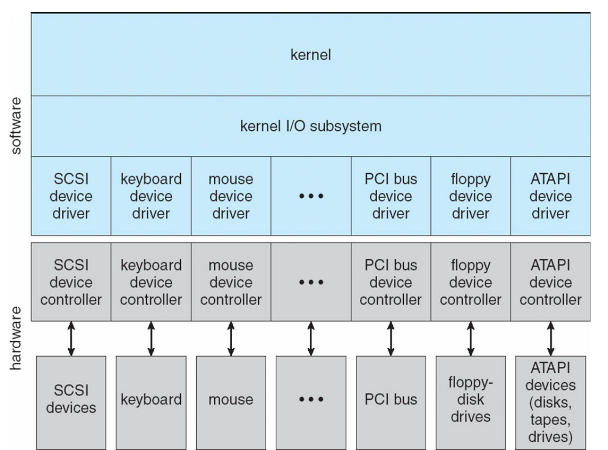
Layered Structure
- Kernel I/O Subsystem: Provides shared, device-independent abstractions: scheduling request queues, buffering, caching, spooling, device reservation, and error handling.
- Device Drivers: Device-specific kernel modules that translate standard abstract I/O commands (read, write, seek) into low-level device controller registers and instructions.
- Device Controllers: Hardware interfaces on the system bus containing command/status registers and internal data buffers that manage the physical device.
- Physical Devices: Mechanical or electronic hardware (magnetic platters, optical media, flash chips, keyboards).
2. Kernel I/O Subsystem Services
The kernel I/O subsystem employs three distinct memory management techniques:
| Mechanism | Primary Function | Data Resident in Memory | Representative Use Case |
|---|---|---|---|
| Buffering | Bridges speed disparities and transfer size mismatches | Data in transit (may hold the only copy) | Assembling streaming network packets into full disk blocks |
| Caching | Accelerates repeated access to slow secondary storage | High-speed duplicate copy of persistent data | Retaining frequently referenced directory and file blocks |
| Spooling | Coordinates concurrent access to dedicated, non-sharable devices | Complete output data streams queued for sequential playback | Print spooler daemon (lpd) collecting concurrent print
jobs |
AY17/18 S2 Q4a(iii): Appropriate usage of buffering vs. caching
- (1) Downloading a file from the Internet and saving to hard disk Buffering: The network operates on unpredictable packet arrival rates with small MTU transfer sizes, while the disk transfers fixed multi-kilobyte blocks. Buffering accommodates transfer size mismatches and decouples transmission speed differences.
- (2) Reading a file block repeatedly from the hard disk Caching: Because the exact same block is referenced repeatedly, keeping a high-speed copy resident in main memory eliminates repeated mechanical disk access latency.
AY16/17 S1 Q4a(iii) & AY18/19 S1 Q4a(iv): Buffer vs. cache definitions
- AY16/17 S1 Q4a(iii): “Caching is used to store data temporarily in memory when they are transferred between devices with different transfer sizes.” — False. Bridging transfer size and speed mismatches during transit is the role of buffering. Caching stores copies of data to accelerate subsequent re-access.
- AY18/19 S1 Q4a(iv): “Buffer holds a copy of the data that resides elsewhere.” — False. A buffer holds data in transit and frequently holds the sole active copy of data before it is persisted. A cache holds a replica of data residing elsewhere.
AY15/16 S2 Q4a(vi): Buffering rapidly written and re-read files
True. (Accepted in exam solution): Buffering intermediate writes in main memory prevents continuous physical disk I/O when files are rapidly updated and re-read. In formal course taxonomy, retaining copies for repeated access is classified as caching, but write buffers similarly absorb high-frequency I/O bursts.
3. Synchronous, Asynchronous, and Non-blocking I/O
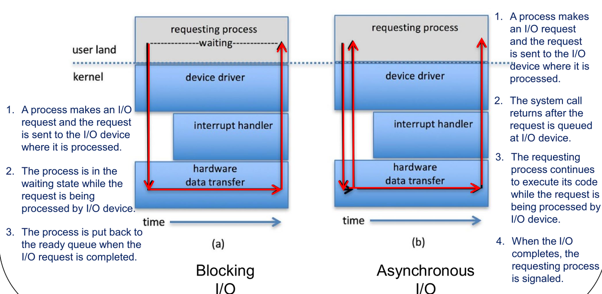
- Blocking (Synchronous) I/O: The issuing thread
halts execution and enters the
Waitingstate until the physical transfer completes, returning data directly to user space. - Non-blocking I/O: The system call returns
immediately with whatever data is currently ready (or an indicator that
data is unavailable). The process never enters the
Waitingstate and continues executing. - Asynchronous I/O: The system call initiates the I/O transfer and returns immediately, allowing the process to continue running concurrent computation. When the hardware transfer completes, the kernel signals the process (via signal or callback).
AY15/16 S2 Q4a(iv) & AY18/19 S1 Q4a(iii): Process states under non-blocking I/O
- AY15/16 S2 Q4a(iv): “A process will be in
either running or ready state after performing an I/O system call if
non-blocking I/O is used.” — True. Non-blocking
calls return immediately without suspending execution, keeping the
thread in the
RunningorReadystate. - AY18/19 S1 Q4a(iii): “A process will be in
waiting state after performing an I/O system call if non-blocking I/O is
used.” — False. Only blocking
system calls place a process into the
Waitingstate.
AY16/17 S1 Q4a(v): Asynchronous I/O in Graphical User Interfaces (GUIs)
True. GUI frameworks rely on asynchronous I/O (or worker threads) to handle background disk and network transfers so the primary event-dispatch thread remains responsive to user mouse clicks, keystrokes, and window redraws without freezing.
Double Buffering Mechanics
Sequential block processing under a single buffer serializes read latency and CPU compute time :
With double buffering, the device controller transfers data into buffer 2 via DMA while the CPU simultaneously processes data in buffer 1:
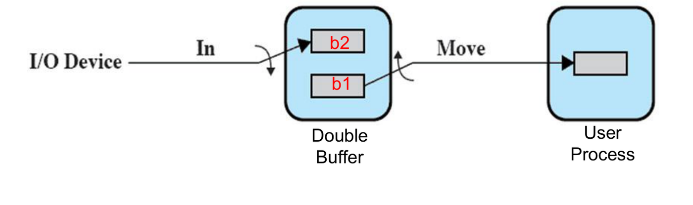
Double buffering achieves pipeline concurrency: per-block throughput is constrained by the bottleneck phase rather than their sum.
4. Life Cycle of an I/O Request
Servicing a storage read traverses ten discrete stages across user, kernel, and hardware layers:
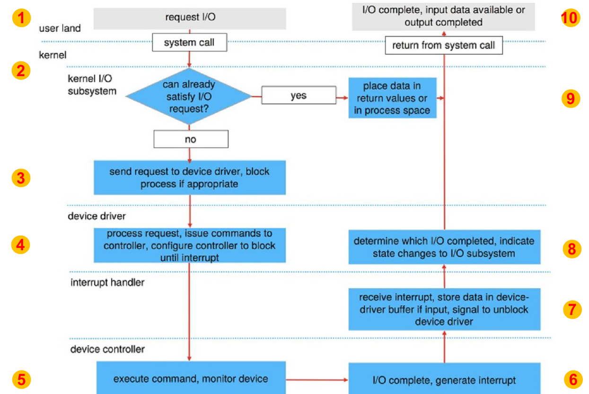
[User Process] 1. Issues read() system call
│
[Kernel I/O Subsystem] 2. Checks cache/buffer. (HIT -> copies to user space, returns immediately!)
│ 3. MISS: Allocates buffer, enqueues request, transitions process to Waiting state
│
[Device Driver] 4. Converts request into device commands; programs controller registers
│
[Device Controller] 5. Issues commands to drive hardware; transfers data into controller buffer
│ 6. Data transfer complete: Asserts hardware INTERRUPT line
│
[Interrupt Handler] 7. Identifies interrupt source; copies controller data into driver buffer
│ 8. Signals device driver that transfer has concluded
│
[Kernel I/O Subsystem] 9. Transfers data from kernel buffer to process address space;
transitions process from Waiting -> Ready queue
│
[User Process] 10. Process scheduled: read() call returns; user execution resumes5. Hard Disk Geometry and Latency Model
A hard disk drive (HDD) consists of stacked rigid platters spinning on a central spindle, read/written by heads mounted on a shared actuator arm.
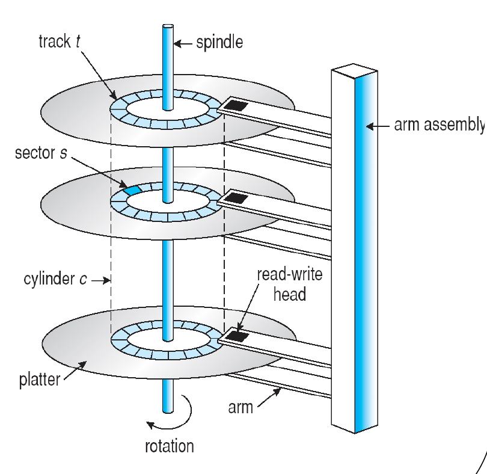
- Track: Concentric circular ring on a platter surface.
- Sector: Fixed-size arc of a track (standard: 512 bytes or 4096 bytes).
- Cylinder: The collection of identical circular tracks across all platter surfaces located at a given actuator radial distance. Switching heads within the same cylinder requires no mechanical arm movement.
Access Time Formula
Disk transfer latency is dominated by mechanical physical positioning:
- Seek Time (): Mechanical time to position the actuator arm over the destination cylinder (). This is the only component minimized by disk scheduling.
- Rotational Latency (): Time for the target sector to spin under the read/write head. Average latency equals half a rotation:
- Transfer Time (): Time to stream contiguous data sectors:
Sequential vs. Random Throughput: Random I/O incurs a full seek and rotational latency penalty on every single sector. Sequential I/O incurs mechanical positioning once, streaming subsequent sectors at peak bus bandwidth.
6. Disk Scheduling Algorithms
Disk scheduling algorithms reorder pending I/O requests in the device queue to minimize total actuator arm displacement (Total Head Movement ).
Consider a 200-cylinder drive
(),
head starting at cylinder 53, pending queue:
98, 183, 37, 122, 14, 124, 65, 67.
First-Come, First-Served (FCFS)
Processes requests strictly by arrival order. Intrinsically fair with zero starvation risk, but suffers severe arm thrashing across wide cylinder spans.
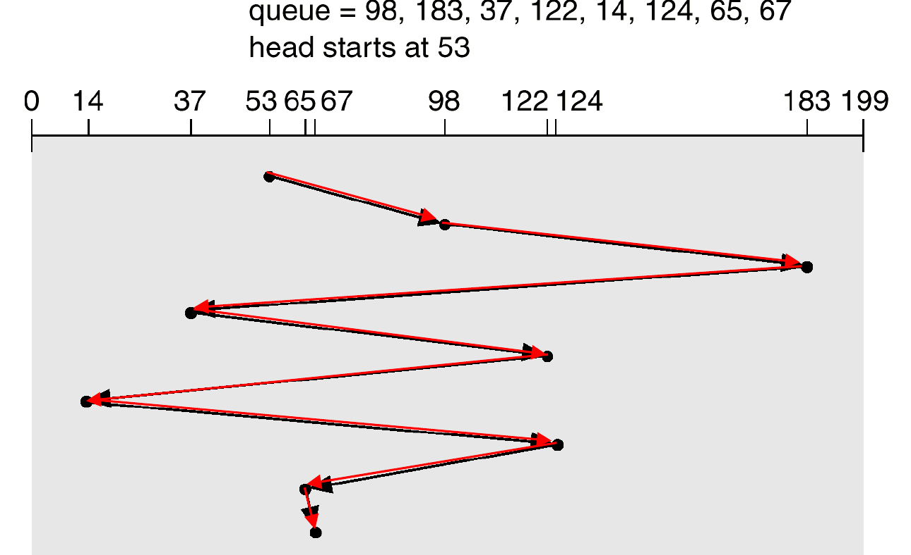
Shortest Seek Time First (SSTF)
Always selects the pending request with the minimum seek distance from the current head position (analogous to SJF scheduling).
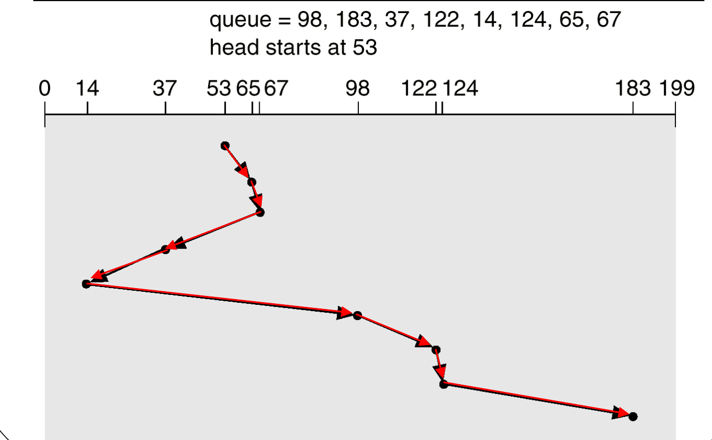
- Limitation: Susceptible to starvation. Continuous arrivals of requests clustered near the current head position will permanently postpone distant requests.
SCAN (Elevator Algorithm)
The actuator sweeps unidirectionally toward one boundary of the disk, servicing all requests along its path. Upon reaching the physical edge (cylinder or ), it reverses direction and services requests on the return sweep.
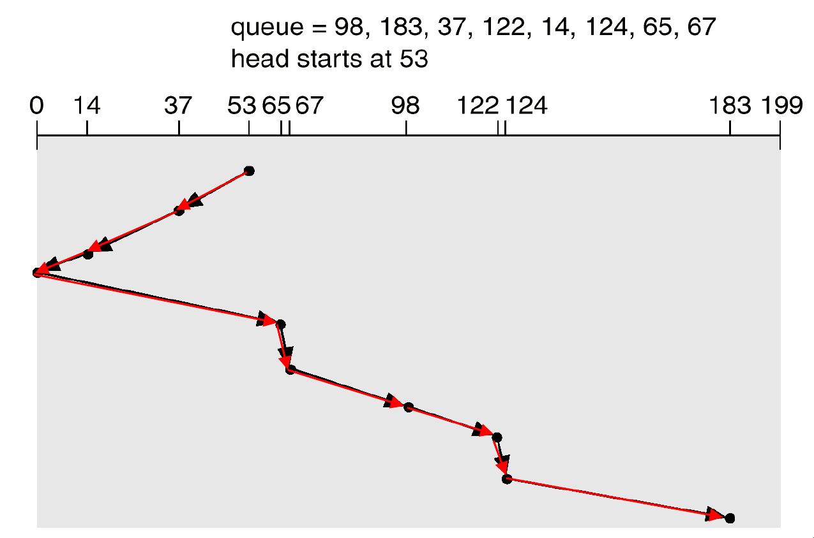
C-SCAN (Circular SCAN)
Sweeps in a single direction servicing requests until reaching the physical boundary (). It then immediately returns to cylinder 0 without servicing requests, and resumes sweeping forward. Provides uniform waiting time distribution.
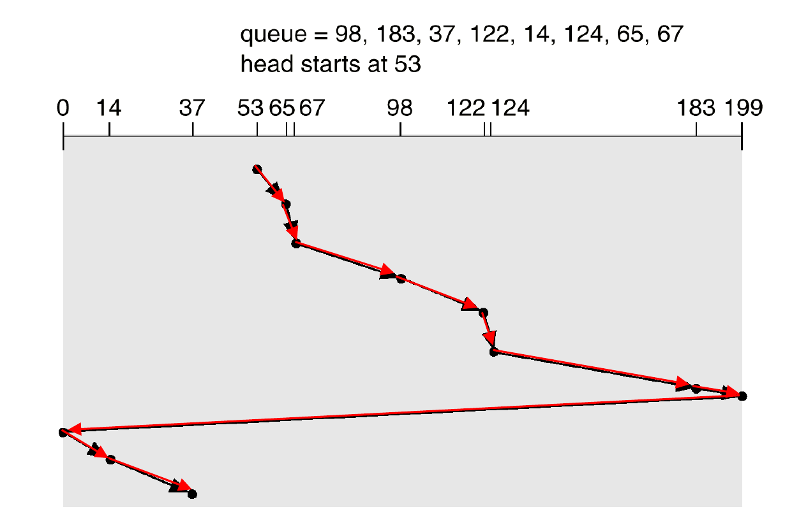
(Note: By course convention, the return boundary jump is included in total movement).
LOOK & C-LOOK
Practical optimizations of SCAN and C-SCAN. The arm inspects (“looks”) ahead for remaining requests in the current trajectory. It reverses immediately at the final pending request rather than traveling uselessly to the physical platter boundary ( or ).
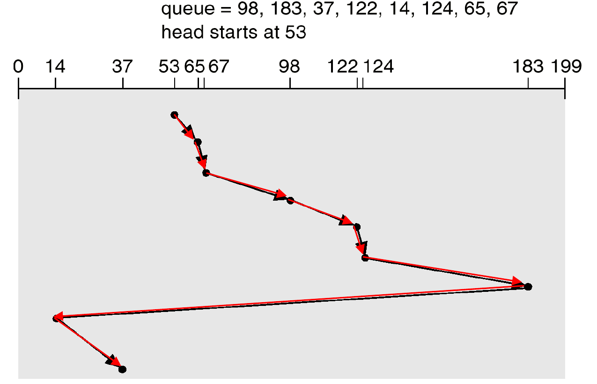
- C-LOOK Path:
- LOOK Path (inward first):
7. Disk Management & RAID Systems
Disk preparation requires three progressive operations:
- Low-level (Physical) Formatting: Writes sector headers, trailers, and Error Correcting Codes (ECC) onto blank magnetic tracks.
- Partitioning: Segments disk platters into contiguous groups of cylinders treated by the OS as distinct logical volumes.
- Logical Formatting: Allocates OS filesystem data structures (inodes, superblock, root directory, free allocation tables).
Disk Striping & Mirroring
- Data Striping: Distributes consecutive blocks across an array of independent drives. Permits simultaneous parallel I/O streaming, drastically improving throughput.
- Disk Mirroring: Writes duplicate copies of all data blocks to a shadow drive, ensuring fault tolerance at the cost of double drive hardware.
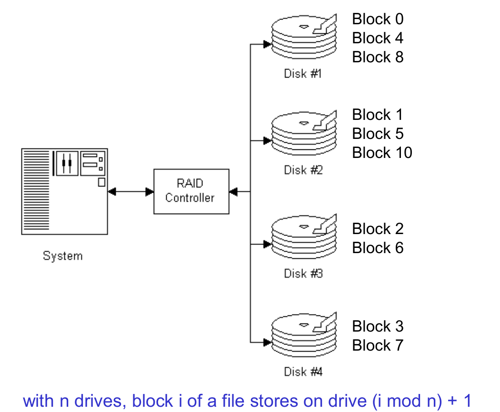
RAID Architecture Levels
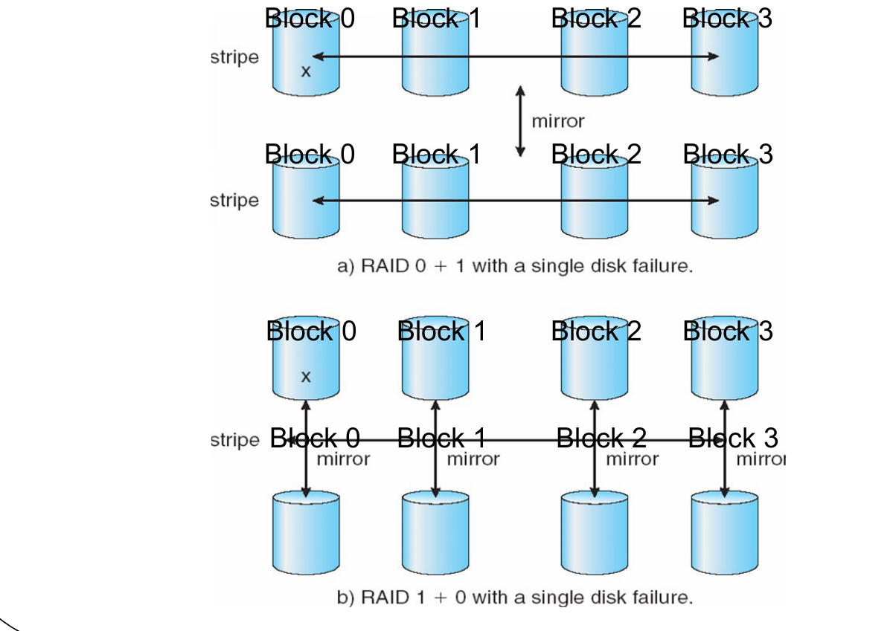
- RAID 0 (Striping): Pure data striping without redundancy. Maximum throughput, zero fault tolerance (a single drive failure destroys the entire array).
- RAID 1 (Mirroring): Full drive duplication. 100% capacity redundancy overhead.
- RAID 0+1 (Mirror of Stripes): Disks are divided
into two striped sets (RAID 0), and one set is mirrored onto the other.
- Failure mode: If one disk fails, its entire stripe set becomes unavailable; the system degrades to a single striped set. A second disk failure in the surviving set causes catastrophic data loss.
- RAID 1+0 (Stripe of Mirrors): Disks are paired into
mirrored sets (RAID 1), and data is striped across the mirrored pairs.
- Failure mode: If one disk fails, only its individual mirror partner is degraded. The array remains operational and can tolerate multiple concurrent drive failures, provided no two failed drives share the same mirrored pair. RAID 1+0 provides vastly superior reliability over RAID 0+1.
AY18/19 S2 Q4a(iv): Storage capacity under RAID 1+0
Four 200 GB hard disks configured under RAID 1+0 form two mirrored pairs of 200 GB each, striped together. Because half the total storage is dedicated to mirror replicas:
AY16/17 S1 Q4a(vi): Reliability comparison between RAID 0+1 and RAID 1+0
“Mirror of stripes (RAID 0+1) has better reliability than stripes of mirrors (RAID 1+0).” — False. RAID 1+0 provides superior fault tolerance. In RAID 1+0, an isolated disk failure only impacts its paired mirror partner, allowing the array to survive additional disk failures across other mirrored pairs. In RAID 0+1, a single failure invalidates an entire striped half, leaving the array completely vulnerable to any subsequent disk crash.
8. Comprehensive Disk Scheduling Problems
AY15/16 S2 Q4c: Service time and head movement for FCFS, SSTF, and SCAN
Given: 200 cylinders
(),
head initially at 60. Queue: 120, 30, 130, 40, 180, 190.
Arm movement rate =
.
Service time per request =
.
Fixed service time for 6 requests
.
- FCFS:
- Order:
- Cylinders
- Total Time
- SSTF:
- Order:
- Cylinders
- Total Time
- SCAN (outward first toward 199):
- Order:
- Cylinders
- Total Time
AY16/17 S1 Q4c: SSTF vs. SCAN head movement comparison
Given: 200 cylinders
(),
head at 160. Queue: 30, 60, 150, 180, 190. (i)
Movement Calculations:
- SSTF:
- SCAN (moving outward toward 199): SCAN yields less head movement (208 vs. 210 cylinders).
(ii) Advantage of SCAN over SSTF: SCAN guarantees an upper bound on waiting latency and completely prevents starvation. SSTF prioritizes localized requests and can permanently starve distant requests if nearby I/O requests arrive continuously.
AY17/18 S1 Q4c: SCAN vs. C-SCAN head movement and advantages
Given: 200 cylinders
(),
head at 100 moving toward 199. Queue:
63, 102, 85, 150, 105, 89.
(i) Total Head Movement:
- SCAN:
- C-SCAN:
(ii) Advantage of C-SCAN over SCAN: C-SCAN provides more uniform waiting times. Under bidirectional SCAN, cylinders near the center are visited twice per complete cycle, whereas boundary cylinders are visited only once per cycle. C-SCAN sweeps in one direction only, ensuring all cylinder requests experience equalized maximum wait bounds.
AY17/18 S2 Q4c: Dynamic request arrivals under LOOK and C-LOOK
Given: Head starts at 150 at time , moving outward (toward 199). Service time (where ). Arrival timeline: : 160; : 40; : 170; : 100; : 80; : 60; : 50.
LOOK Trace (services outward, reverses at highest arrived request):
- At , head at 150. Only request 160 has arrived. Service 160: . Finish at .
- At , arrived queue: {40, 170}. Moving outward service 170. Service 170: . Finish at .
- At , arrived queue: {40, 100}. No requests further outward; reverse arm inward. Service 100: . Finish at .
- At , arrived queue: {40, 80}. Service 80: . Finish at .
- At , arrived queue: {40, 60}. Service 60: . Finish at .
- At , arrived queue: {40}. Service 40: . Finish at .
- At , request 50 arrived at . Service 50: . Finish at .
LOOK Service Sequence: 160, 170, 100, 80, 60, 40, 50.
C-LOOK Service Sequence (outward service only): After servicing 170 at , head jumps to lowest arrived request (40) and sweeps outward: C-LOOK Service Sequence: 160, 170, 40, 60, 80, 100, 50.
AY18/19 S1 Q4c: SSTF servicing order and starvation mitigation
Given: Head at 100. Pending queue:
150, 110, 80, 160, 5, 190. (i) Servicing
Order:
- From 100: nearest is 110 (dist: 10)
- From 110: nearest is 80 (dist: 30 vs. 40 to 150)
- From 80: nearest is 150 (dist: 70 vs. 75 to 5)
- From 150: nearest is 160 (dist: 10)
- From 160: nearest is 190 (dist: 30)
- From 190: nearest is 5 (dist: 185) Servicing Order: 110, 80, 150, 160, 190, 5.
(ii) Starvation Cause & Solutions:
- Cause: SSTF greedily prioritizes local requests. Under heavy incoming load, if new requests continuously arrive near current head locations, requests at distant cylinders (such as cylinder 5) may be starved indefinitely.
- Solutions: Implement aging (incrementing request priorities based on wait duration) or replace SSTF with SCAN / LOOK / C-SCAN which enforce directional bounded service intervals.
AY18/19 S2 Q4d: Equivalence of SSTF and LOOK execution sequences
Given: Head at 90 (previous cylinder was 85
moving outward). Queue: 20, 100, 40, 60, 75, 120, 160.
Result: SSTF and LOOK yield the IDENTICAL servicing
sequence:
- LOOK: Continues outward servicing all higher
cylinders:
100, 120, 160. At 160 (the outward limit), reverses inward servicing remaining requests in decreasing order:75, 60, 40, 20. - SSTF:
- At 90: nearest is 100 (dist 10 vs. 15 to 75).
- At 100: nearest is 120 (dist 20 vs. 25 to 75).
- At 120: nearest is 160 (dist 40 vs. 45 to 75).
- At 160: nearest remaining is 75, then sequentially down through 60, 40, 20. Both algorithms execute the sequence: 100, 120, 160, 75, 60, 40, 20.
AY19/20 S1 Q4c: SSTF vs. FCFS total movement and fairness evaluation
Given: Head at 100. Arrival queue:
45, 134, 88, 110, 74, 150. (i) SSTF Order &
Head Movement:
- From 100 110 (10) 88 (22) 74 (14) 45 (29) 134 (89) 150 (16).
(ii) FCFS Head Movement & Improvement:
(iii) Fairness Justification: FCFS is inherently fair because it processes requests strictly in chronological arrival order with zero bias toward cylinder location, guaranteeing an upper bound on wait times. SSTF is biased toward spatial proximity and permits starvation of requests located far from current clusters.